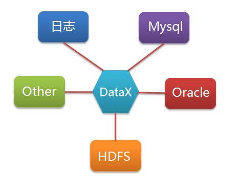
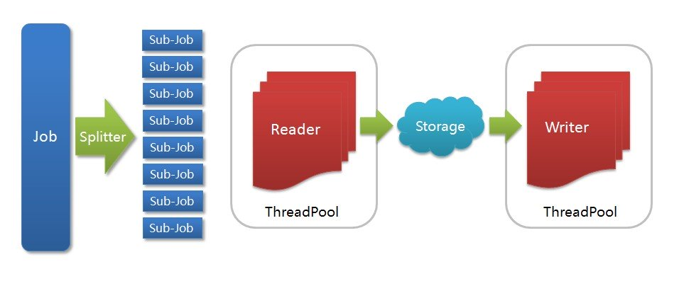
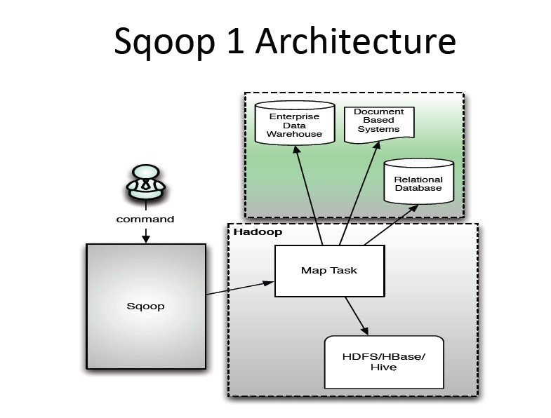

Kettle中有两种脚本文件，transformation和job，transformation完成针对数据的基础转换，job则完成整个工作流的控制。
Kettle家族目前包括4个产品：Spoon、Pan、CHEF、Kitchen。 SPOON 允许你通过图形界面来设计ETL转换过程（Transformation）。 PAN 允许你批量运行由Spoon设计的ETL转换 (例如使用一个时间调度器)。Pan是一个后台执行的程序，没有图形界面。 CHEF 允许你创建任务（Job）。 任务通过允许每个转换，任务，脚本等等，更有利于自动化更新数据仓库的复杂工作。任务通过允许每个转换，任务，脚本等等。任务将会被检查，看看是否正确地运行了。 KITCHEN 允许你批量使用由Chef设计的任务 (例如使用一个时间调度器)。KITCHEN也是一个后台运行的程序。
使用简单，使用xml配置、java api调用，没有提供Job管理的功能，没有配置界面。
scriptella Github Two Minute Tutorial Scriptella ETL Reference Commons JEXL Syntax
DataX是淘宝开源的数据导入导出的工具，解决异构环境的数据交换问题，支持HDFS集群与各种关系型数据库之间的数据交换，对于不同数据库的支持都是插件式的，对于新增的数据源类型，只要新开发一个插件就好了。

其特点在于：
1）官方版本支持的Hadoop版本较低（0.19），暂不支持高版本（如CDH4）。 2）支持从一个HDFS集群到另一个HDFS集群之间的数据导入导出。 3）支持数据不落地的并行导入导出。 - 在异构的数据库/文件系统之间高速交换数据 - 采用Framework + plugin架构构建，Framework处理了缓冲，流控，并发，上下文加载等高速数据交换的大部分技术问题，提供了简单的接口与插件交互，插件仅需实现对数据处理系统的访问 - 运行模式：stand-alone - 数据传输过程在单进程内完成，全内存操作，不读写磁盘，也没有IPC - 开放式的框架，开发者可以在极短的时间开发一个新插件以快速支持新的数据库/文件系统。（具体参见《DataX插件开发指南》）

DataX框架内部通过双缓冲队列、线程池封装等技术，集中处理了高速数据交换遇到的问题，提供简单的接口与插件交互，插件分为Reader和 Writer两类，基于框架提供的插件接口，可以十分便捷的开发出需要的插件。比如想要从oracle导出数据到mysql，那么需要做的就是开发出 OracleReader和MysqlWriter插件，装配到框架上即可。并且这样的插件一般情况下在其他数据交换场合是可以通用的。更大的惊喜是我们 已经开发了如下插件：
Reader插件
Writer插件
您可以按需选择使用或者独立开发您自己的插件 (具体参见《DataX插件开发指南》)
Sqoop是Apache下的顶级项目，用来将Hadoop和关系型数据库中的数据相互转移，可以将一个关系型数据库（例如：MySQL，Oracle，PostgreSQL等）中的数据导入到Hadoop的HDFS中，也可以将HDFS的数据导入到关系型数据库中。目前在各个公司应用广泛，且发展前景比较乐观。其特点在于：
1）专门为Hadoop而生，随Hadoop版本更新支持程度好，且原本即是从CDH版本孵化出来的开源项目，支持CDH4应该没问题。 2）支持并行导入，宣称速度很快（由于时间紧，未来得及进行真实环境的测试），可以指定按某个字段进行拆分并行化导入过程。 3）支持按字段进行导入与导出。 4）自带的辅助工具比较丰富，如sqoop-import、sqoop-list-databases、sqoop-list-tables等。

DataX 直接在运行DataX的机器上进行数据的抽取及加载。 而Sqoop充分里面了map-reduce的计算框架。Sqoop根据输入条件，生成一个map-reduce的作业，在Hadoop的框架中运行。 从理论上讲，用map-reduce框架同时在多个节点上进行import应该会比从单节点上运行多个并行导入效率高。而实际的测试中也是如此，测试一个Oracle to hdfs的作业，DataX上只能看到运行DataX上的机器的数据库连接，而Sqoop运行时，4台task-tracker全部产生一个数据库连接。调起的Sqoop作业的机器也会产生一个数据库连接，应为需要读取数据表的一些元数据信息，数据量等，做分区。 Sqoop现在作为Apache的顶级项目，如果要我从DataX和Sqoop中间选择的话，我想我还是会选择Sqoop。而且Sqoop还有很多第三方的插件。早上使用了Quest开发的OraOop插件，确实像quest说的一样，速度有着大幅的提升，Quest在数据库方面的经验，确实比旁人深厚。
在我的测试环境上，一台只有700m内存的，IO低下的oracle数据库，百兆的网络，使用Quest的Sqoop插件在4个并行度的情况下，导出到HDFS速度有5MB/s ，这已经让我很满意了。相比使用原生Sqoop的2.8MB/s快了将近一倍，sqoop又比DataX的760KB/s快了两倍。 另外一点Sqoop采用命令行的方式调用，比如容易与我们的现有的调度监控方案相结合，DataX采用xml 配置文件的方式，在开发运维上还是有点不方便。
DataX 官方Wiki、代码 大数据异构环境数据同步工具DataX 与Sqoop 之比较 淘宝异构数据源数据交换工具 DataX 中软数据交换平台解决方案 RiDol DE数据交换平台